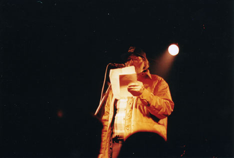
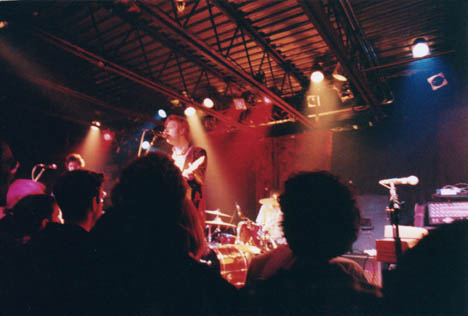
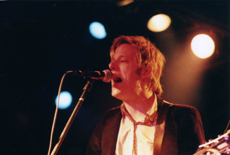
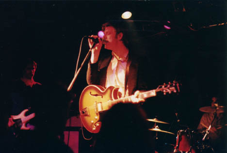
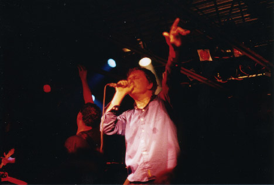
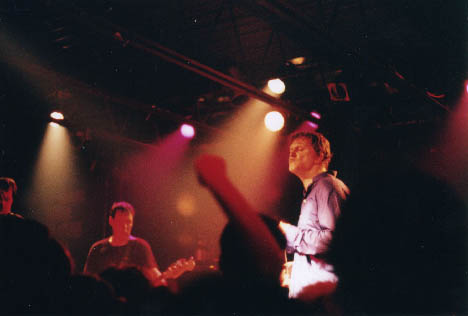
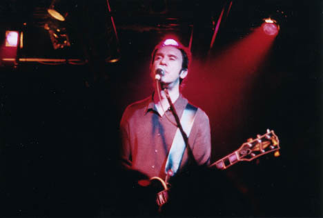
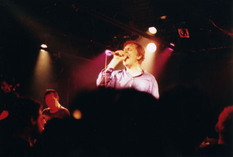
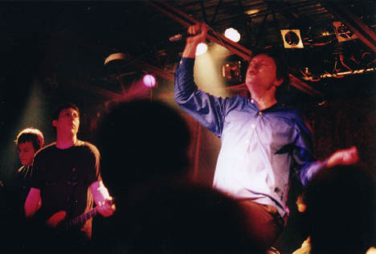
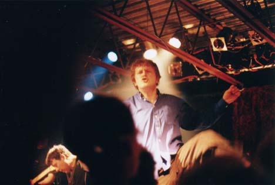

Big Orange Crayonmusical thingsGuided By Voices and Spoon Valentine's, Albany, NY April 28, 2001 It's been a week since this show, so it's sort of silly to write a review now, so this'll be more pictures than anything. Big Orange Crayon: more rock, less talk. Anyway, both bands were great - Spoon on the songwriting side and Guided By Voices on the showmanship side. Robert Pollard is such a rock star, I love it. Anyway, before the bands came on, a Chicago-area poet that was traveling with the bands came up and read a few poems about the bands. I thought it was neat. I can't remember the last time I heard someone yell "read another poem!" at a show, you know? Spoon played first, and I mean, I don't really know many of Spoon's songs, but I've listened to some at various times in the past and they've always been on my "I'll buy that sometime" list, but you know how things are. They definitely shifted up a few spots after this show, though. Yay them. I yelled "Goodnight Spoon!" when they were leaving because I'm a dork. (How's that for not talking about the actual show at all?) Guided By Voices came on next in all of their drunken glory. I know I usually whine about the drinking at shows, but at a Guided By Voices concert that's like complaining about there being sand at the beach. Anyway - Robert Pollard is a silly, silly man, and I love him to pieces. I mean, the guy looks pretty damn old now, but he still jumps around and swings his microphone better than anyone half his age. When people yelled requests at the beginning, he said they'd get to them when they were drunker, and they did just that. Amazingly, they kept on playing wonderfully through a long-ass set and an encore, the end of which they stumbled off the stage and stayed off through frenzied (and not all that syncopated...) chants of "G!B!V!", reportedly not doing a second encore because Bob hurt his leg during the show (they had to cancel their next one in Vermont). But yeah, they both fucking rocked. I guess I could have just said that and been done with it, huh? Anyway, pictures:  The poet Spoon    Guided by Voices  This is my favorite one  Ok, that looks like an arm in the middle, but if it is, it seems to be coming out of that dude's head     Dorky technical stuff that nobody could possibly care about but I'm putting in for my own reference: Camera: Nikkormat FTN Lenses: Nikkor-P 105mm f/2.5, Nikkor-S.C 50mm f/1.4, Nikkor 24mm f/2.8 Film: Fuji Press 800 pushed to 1600 Aperture: wide open all the time Shutter speeds: between 1/30 and 1/250 |